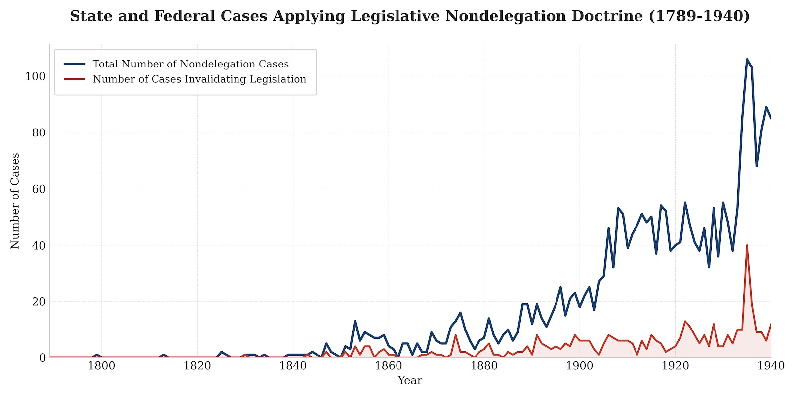

History of the Nondelegation Doctrine Database
This database provides the comprehensive empirical foundation for the study of the nondelegation doctrine in American courts from 1789 to 2015. Developed in collaboration with Jason Iuliano, the dataset tracks over 2,000 cases to provide a granular look at how state and federal courts have treated legislative delegations of power across more than two centuries of legal history.
Associated Research
The data provided here was utilized in the following articles exploring the historical vitality of the nondelegation doctrine:
-
The Myth of the Nondelegation Doctrine
University of Pennsylvania Law Review (2017) -
The Nondelegation Doctrine: Alive and Well
Notre Dame Law Review (2017)

Figure: Historical frequency of nondelegation challenges and outcomes in American courts, 1789–2015.Preferred Citation
Jason Iuliano and Keith E. Whittington, Legislative Nondelegation Doctrine Database (2017)